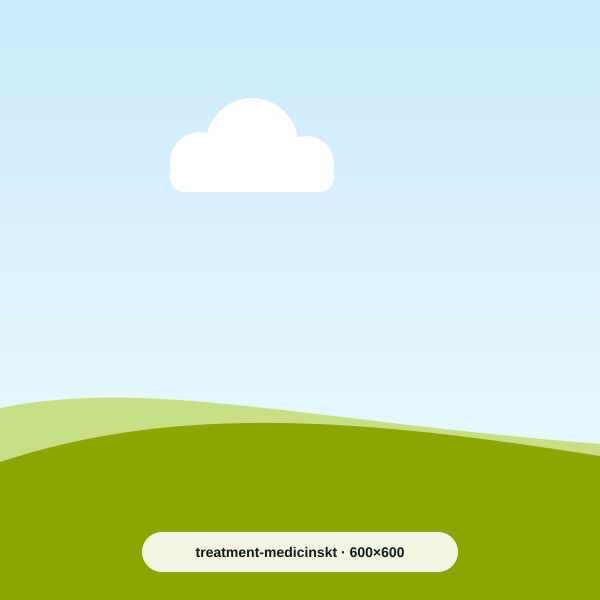
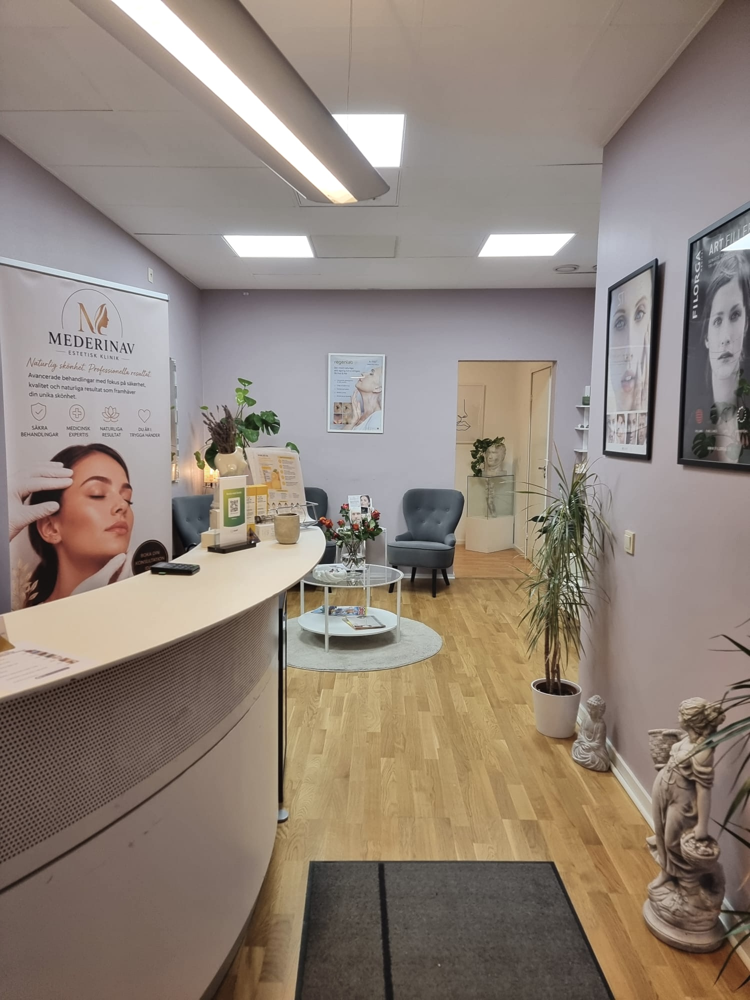
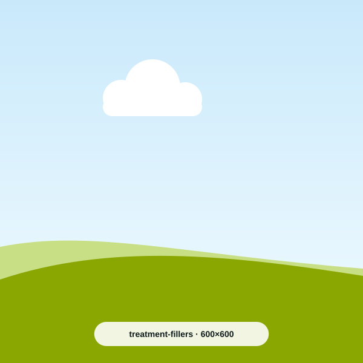
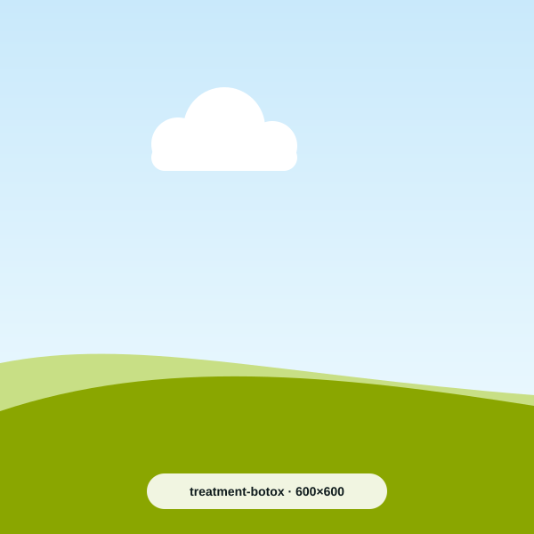
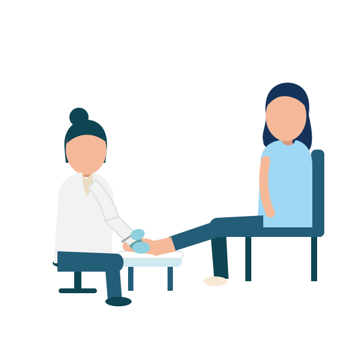
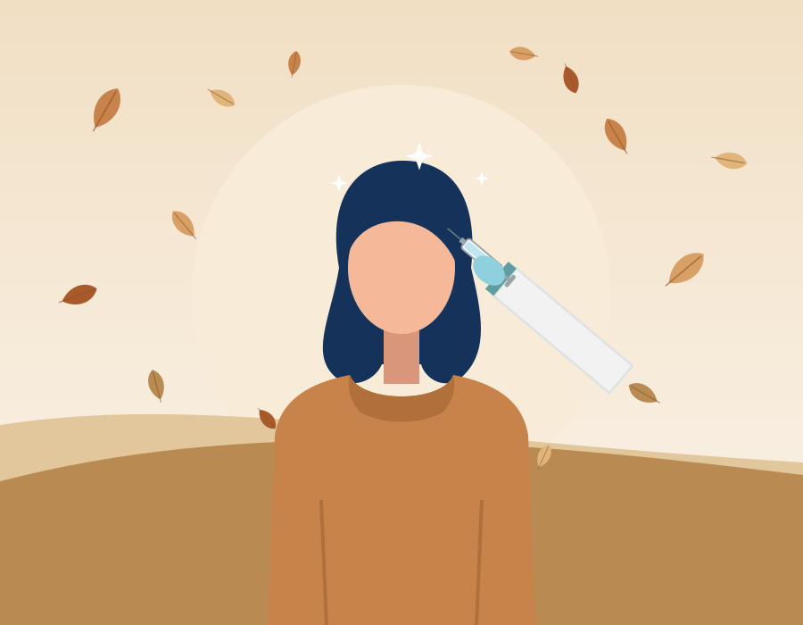
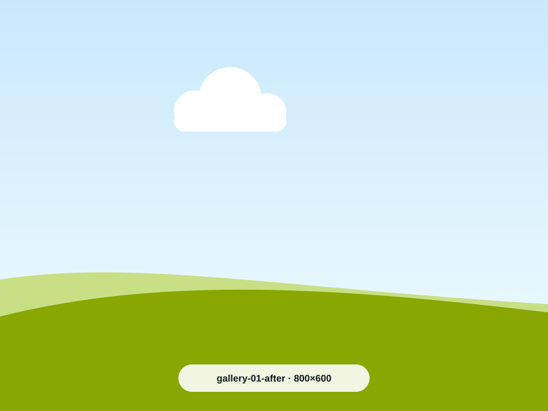
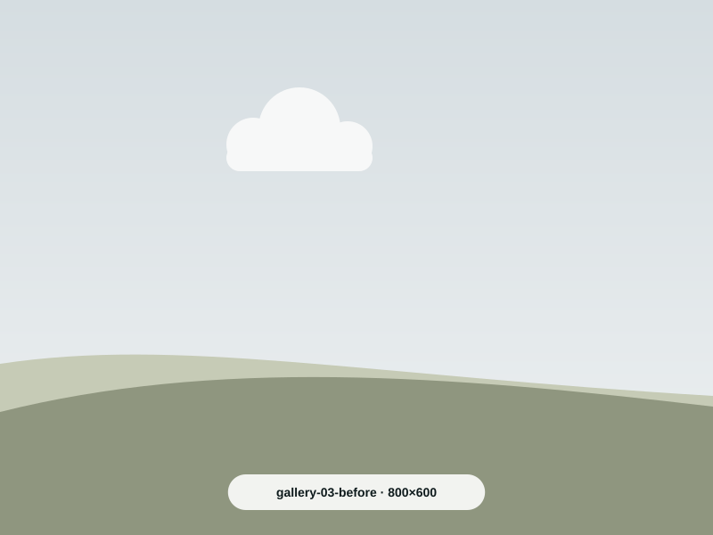
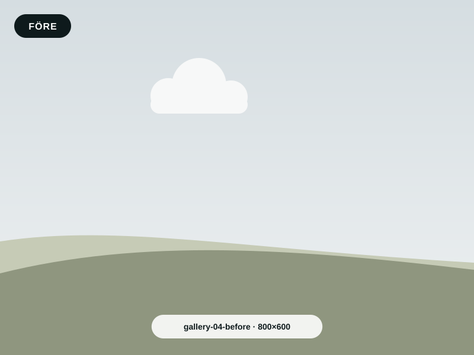
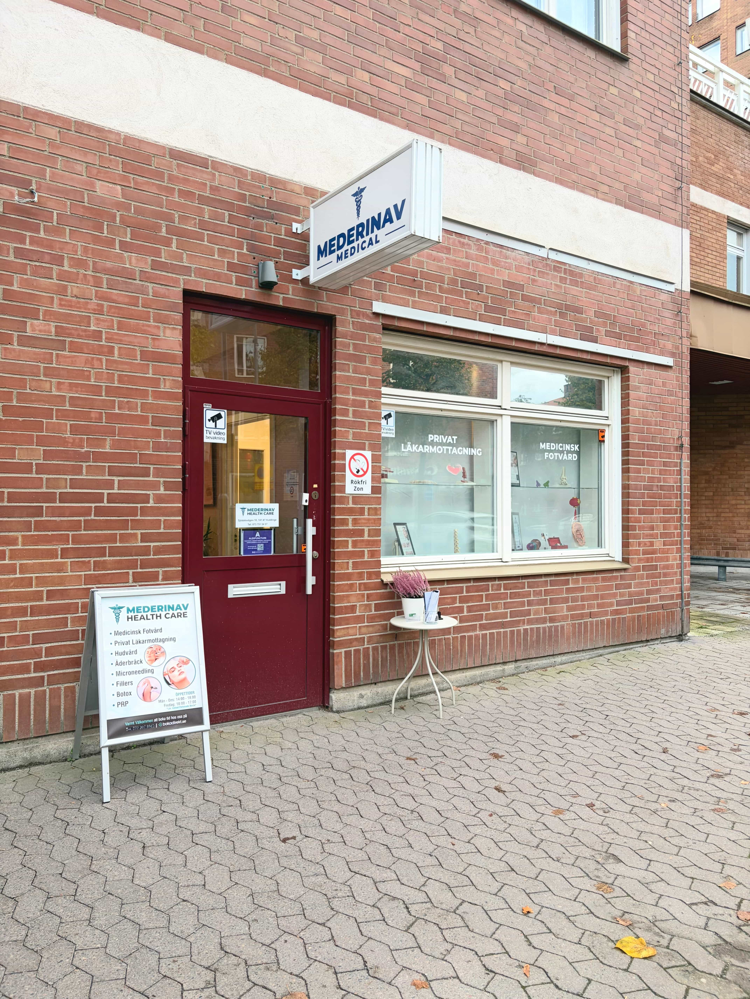

Medicinska behandlingar
Läkarkonsultation, födelsemärkeskontroll och borttagning av hudförändringar.
Läs mer om medicinska behandlingarMederinav Health Care är en läkarledd klinik för medicinska behandlingar, estetiska injektioner och fotvård. Vi tar oss tid att lyssna – och behandlar bara när det är rätt för dig.

Från läkarbesök till estetiska injektioner och medicinsk fotvård – alltid med en konsultation först.

Läkarkonsultation, födelsemärkeskontroll och borttagning av hudförändringar.
Läs mer om medicinska behandlingar
Hyaluronsyra för läppar, kindben och käklinje – subtilt och naturligt.
Läs mer om fillers
Mjukar upp mimikrynkor i panna och kring ögon, samt behandlar svettningar.
Läs mer om botox
Medicinsk fotvård, nageltrång, liktornar och anpassad vård vid diabetes.
Läs mer om fotvård
Dra i reglaget för att jämföra. Alla bilder publiceras med patientens samtycke.



Resultat varierar från person till person. Vid konsultationen går vi igenom vad som är realistiskt för just dig.

Läkare · Specialist i allmänmedicin och allmän kirurgi
Bred medicinsk kompetens – från kirurgi till estetisk medicin
Christian Navarro är specialist i allmän kirurgi och allmänmedicin, med utbildning inom estetisk medicin och inom kärlområdet – där han har särskild inriktning på behandling och kirurgiska ingrepp vid åderbråck.
Varje behandling börjar med en noggrann medicinsk bedömning. Du får tydlig information om alternativ, förväntat resultat och eventuella risker, så att ditt beslut blir väl underbyggt.
Med patientsäkerhet och medicinsk kvalitet i fokus är målet att varje patient ska känna sig trygg och väl omhändertagen.
Medicinsk fotterapeut
Medicinsk fotvård med vårdens noggrannhet
Lorena Munoz är medicinsk fotterapeut med bakgrund som sjuksköterska. Det ger henne en helhetssyn där fotens hälsa bedöms i relation till patientens allmänna hälsotillstånd.
Hon har särskild erfarenhet av fotvård för patienter med diabetes, där förebyggande behandling och regelbunden uppföljning är viktiga för att minska risken för sår och andra komplikationer.
Varje behandling utförs noggrant och med omsorg, anpassad efter dina behov och förutsättningar.

Ring oss på 073-751 54 57 eller mejla kundservice@mederinavhealthcare.se.
Pendeltåg till Huddinge station, därefter en kort promenad till kliniken.
Flera busslinjer stannar vid Huddinge centrum, några minuters promenad bort.